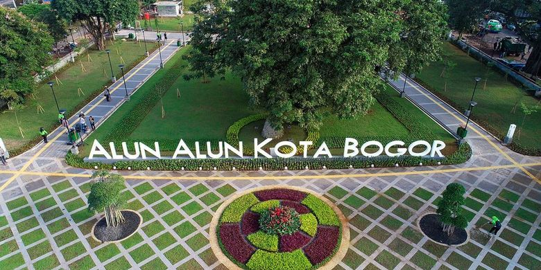
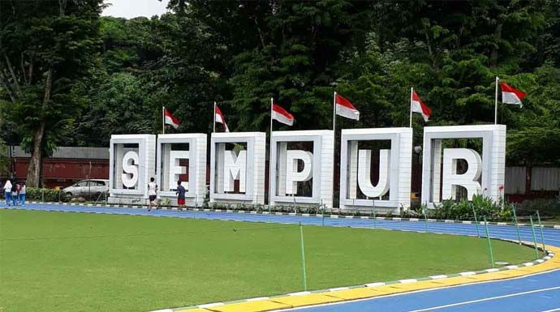

Wisata
Bogor merupakan salah satu kota, yang seringkali dijadikan sebagai
pilihan untuk berlibur oleh para wisatawan. Bahkan jika dilihat dari
segi wisatanya, Bogor sendiri dibagi menjadi dua wilayah terkenal
yang dijadikan sebagai tempat liburan di Bogor. Tempat wisata Bogor
saat ini cukup banyak, seperti salah satunya kawasan wisata Puncak
Bogor dan juga Sentul City.
Kebun Raya

Lokasi
Jl. Ir. H. Juanda No.13, Paledang, Kecamatan Bogor Tengah, Kota
Bogor, Jawa Barat 16122. Berada di Pusat Kota Bogor
Deskripsi
Kebun Raya Bogor atau Kebun Botani Bogor adalah sebuah kebun
botani besar yang terletak di Kota Bogor, Indonesia. Luasnya
mencapai 87 hektaree dan memiliki 15.000 jenis koleksi pohon dan
tumbuhan. Saat ini Kebun Raya Bogor ramai dikunjungi sebagai
tempat wisata, terutama hari Sabtu dan Minggu. Di sekitar Kebun
Raya Bogor tersebar pusat-pusat keilmuan yaitu Herbarium
Bogoriense, Museum Zoologi Bogor, dan PUSTAKA.
Alun-Alun Kota Bogor

Lokasi
Jl. Kapten Muslihat No.17 A, RT.04/RW.06, Pabaton, Kecamatan Bogor
Tengah, Kota Bogor, Jawa Barat 16121
Deskripsi
Alun-alun dengan luas sekitar 1,7 hektar ini berada tepat di
tengah kota Bogor tidak jauh dari Istana Bogor. Desainnya sangat
unik dan di sekelilingnya ada banyak bangunan bersejarah yang
cocok untuk Anda pecinta wisata sejarah. Konsepnya adalah ruang
terbuka ala Eropa sehingga memang memanjakan pengunjung untuk
beristirahat, bersantai hingga berolahraga dan bermain. Taman Kota
Bogor ini sangat asri dengan rimbunnya pepohonan dan tanaman
hijau.
Lapangan Sempur

Lokasi
Jl. Sempur Kidul No.65 Samping Kebun Raya Bogor, Bogor 16129
Indonesia
Deskripsi
Taman Sempur Bogor ini akan terlibat cantik dan indah jika dilihat
pada malam hari karena di setiap sudutnya dihiasi lampu-lampu. Tak
hanya itu, Sempur juga difasilitasi Taman Kaulinan bagi anak-anak,
lapangan basket, dan Skate Park. Wali Kota Bogor, Bima Arya
Sugiarto mengatakan, Taman Sempur merupakan bagian dari kawasan
utama pusat kota sehingga harus ditata dan dibenahi. Sebab, sejak
dulu kawasan itu menjadi salah satu tempat olahraga juga tempat
bermain warga Kota Bogor.